|
Additional
2002
Photos from the Old Nicks archives. Click Here |
SON OF OLD NICKS Vs LAS VEGAS
THE 2002 KING CUP TOURNAMENT
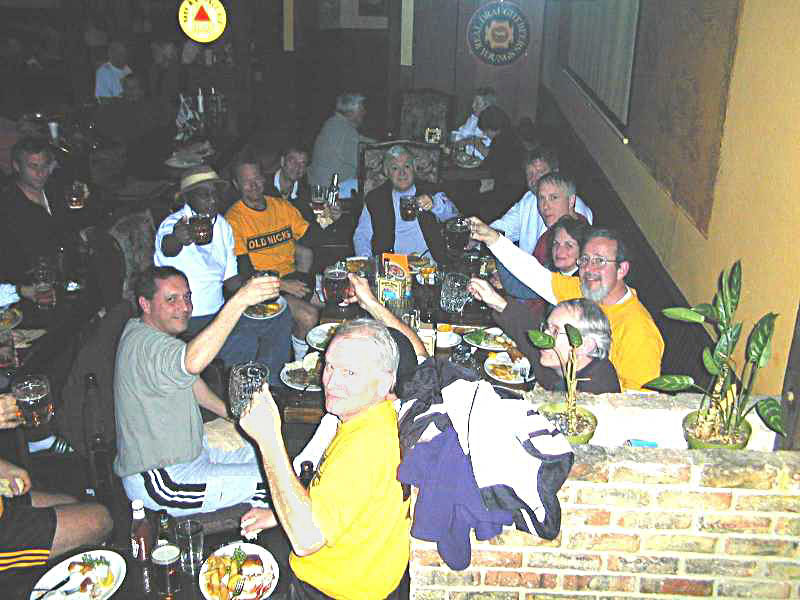 Yes! It's the intrepid Old Nick's crew celebrating their Las Vegas victory at the Crown & Anchor, favorite watering hole of Pierre's, while in Las Vegas. Despite losing the match, they were gracious enough to tell us where the pub was. |
2002
Jim
Brinkman (1 goal)
|
OLD NICKS vs. LAS VEGAS
The Second Time Around - David Porter
|
Others tried their luck
at gaming. Some were in places unknown or unmentionable. |
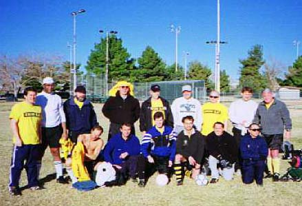 |
| We may have been bruised and battered after 2001, but never vanquished. On Friday night, the eve of the tournament, Old Nick's players were wandering the streets of Las Vegas or still enroute. Some modelled the penis nose glasses at the World's Largest Souvenir Store. Mayfield tried to recruit a youthful Elvis to the team... | 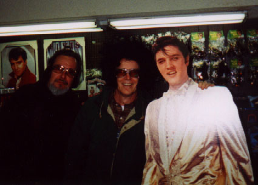 |
|
The amazing thing was that almost all the players assembled early the next morning in front of Lucky's at the Stratosphere so that we could caravan to the field. Of course, Claude had to rumble in from his digs at Bally where he was 'known to the staff'. Matt, as last year, was a personal guest of the manager at the Riviera, or so he intimated. And Rob came straight from a bar whose name I don't recall...like Rocky Raccoon, still stinking of gin. |
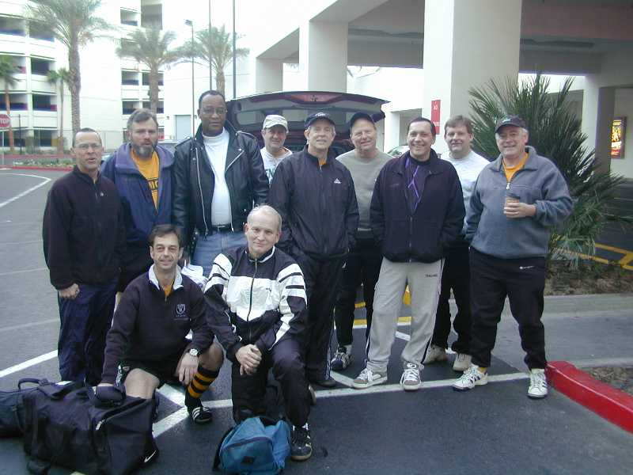 |
|
Rob's story on presentation of this photo was that he was subtly sabotaging the other team, particularly their goalkeeper, Dana, whose head comprises the third shiny round orb. Since there may be young people in our audience, we have tastefully edited the shocking original. |
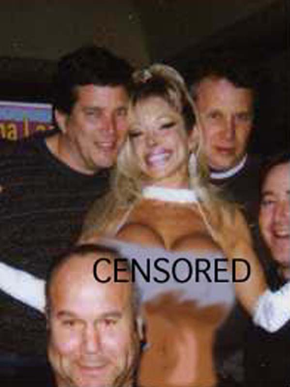 |
| The mood was cheerful that Saturday morning as we prepared to do battle with PARS, a Persian team from San Jose. Particularly because we were at full strength this year, meaning enough subs so that people could go have breakfast or bloody marys in rotation during the game. It was a joyful beginning. And, in fact, we did better than our 2000 start. The game was close at the half, and ended only 0-6. And we'd actually had shots on goal- some good ones. We were jazzed! We knew it was going to be our turn soon. | 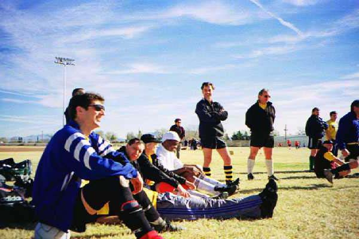 |
| The second game was against a team from Tucson. Their manager came over and was very friendly before the match, but it was clearly just an attempt to disarm us. We, however, were not fooled. Our moment was coming! No team from Tucson was going to best us! Much to our surprise, we actually began to turn the tide of play. If it hadn't been for the field size- just larger than a king size bed- we might have had a chance at taking advantage of our speed and desperation. As it was, we battled to a 0-0 tie. We were ecstatic, especiallys since we'd been more effective on offense than they had. | 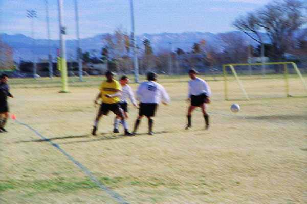 |
| The game progressed with a steady swing of momentum in our direction. In this photo, "bullseye brinkman" prepares to take a shot as the ball is cleared from the Tucson goal. He's warming up for his big moment in the final game. Not only were the fields designed for players from Lilliput, but the goals were low enough you could be clotheslined if you went up for a header. When the game with Tucson was over, the only bad news was that Mayfield, Gero, and Johnson were all among the walking wounded. Not good.! | 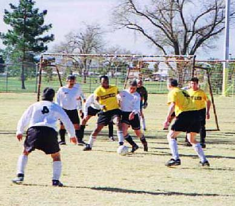 |
| Having muscled our way to
a tie in the second game, I put the entire team into a serious training
regimen. Several players were delegated to go to the Stratosphere hot tub,
an eighth story desert blasted by an unforgiving wind and a hard closing
time of 4pm! Who ever heard of a hot tub that closed at 4pm? Apparently
their insurance wouldn't cover the risk that someone might wander over the
parapet of the eight stories in a hot tub induced frenzy. But the most important part of the regimen is the "Training Table". So as many of the team as possible gathered at Bellagio's. Having a few ostrich eggs ala carte and some wildboar is always good for one's game. Perhaps not as good as the complimentary champagne, but 'oh well'.... It's interesting to note in this picture that Warlock Stigler is showing his true colors and perhaps that explains his detention at the airport. As is often the case with the team, arriving on time isn't really a priority. So some players were not there when we began our repast. |
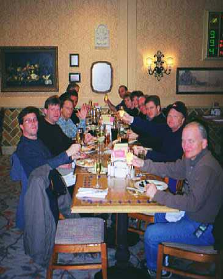 |
| Rob makes his dramatic wheelchair entrance at the Bellagio buffet. Both he and his assistant are making cryptic, gang hand gestures. | 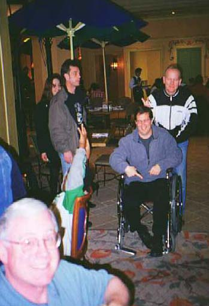 |
| A rare picture of the mysterious Dr. Makande. Reputedly, he could be sighted at the Stratosphere's hot tubs or the casino late at night. Here, he glides into the darkness from the Bellagio. | 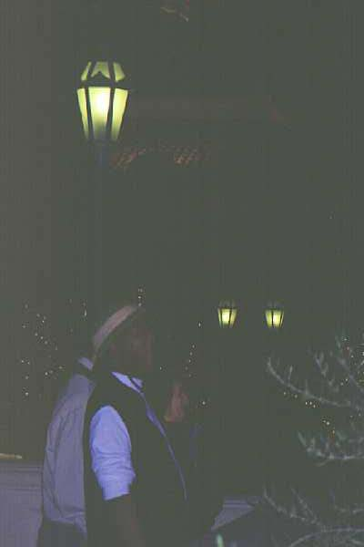 |
|
The only known photo of the famous win (2-1) against Pierre's. To our benefit, the referee switched the game from the straw-covered kid's field to a full size, lit field unused for the last time bracket of the tournament. A couple of Pierre players, Dominic and Sudie, had played with Old Nicks back in the 80's. Rob's brother was on their team. Dave Nicholas, a one-time member of the old Timbers and St. Pat's team of the 70's, was a midfielder for them. Our whole team seemed to welcome stretching our cramped legs on the big field. Pierre's skills were offset by our raw energy and a very good match ensued. |
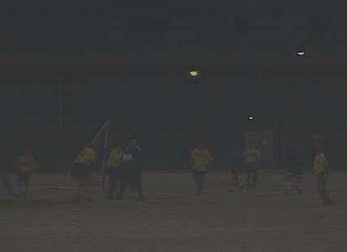 |
|
Here's an "enhanced" version of the photo. The great thing is that any of the gold shirted blobs could be any one of us. So, we're all in the picture! Jim Brinkman broke the game open with a high-orbit shot that seemed to mesmerize Pierre's keeper. Continued high work rate paid off for the 'Nicks as a second goal by Rock clinched the match. No "B" movie ending could have seemed more unreal. But it happened, and we went back to the January rains of Portland with a legendary win for the annals of Old Nicks. |
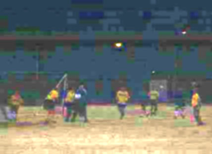 |
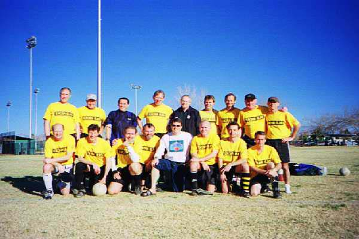
And That's The Way It Was Folks. Honest!